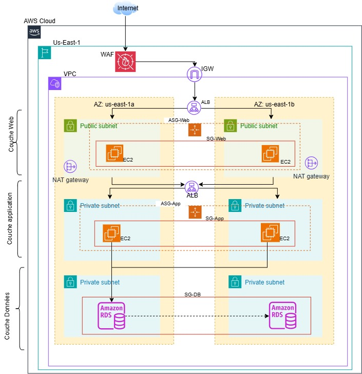

Déploiement d’une architecture à 3 niveaux avec Terraform
Une architecture web, applicative et données répartie sur deux zones de disponibilité, protégée par un WAF et entièrement décrite en code Terraform.
- Rôle
- [Votre rôle]
- Durée
- [Durée]
- Année
- [Année]
- Code source
- Dépôt GitHub
Contexte et objectifs
Ce projet met en place une infrastructure AWS en architecture 3-tiers (web, applicatif, données), entièrement décrite et déployée sous forme de code avec Terraform (Infrastructure as Code).
Le but est d’obtenir une infrastructure hautement disponible, sécurisée et reproductible, répartie sur deux zones de disponibilité, avec une séparation stricte des niveaux réseau, une protection par pare-feu web (WAF) et une base de données relationnelle résiliente.
- Répartir tous les niveaux (web, applicatif, données) sur deux zones de disponibilité.
- Séparer strictement les niveaux réseau, sans jamais exposer la base de données à Internet.
- Filtrer les attaques web courantes avant qu’elles n’atteignent les serveurs.
- Disposer d’une base de données résiliente, avec sauvegardes automatiques.
- Décrire l’ensemble en code pour le reproduire sur d’autres environnements.
Architecture
L’architecture s’appuie sur un VPC unique découpé en six sous-réseaux, répartis sur deux zones de disponibilité (région us-east-1) :
- Sous-réseaux publics (public_1, public_2) : Application Load Balancer public, NAT Gateways et instances EC2 du niveau web.
- Sous-réseaux applicatifs privés (app_1, app_2) : instances EC2 du niveau applicatif.
- Sous-réseaux de données privés et isolés (data_1, data_2) : uniquement la base de données RDS.
Ce découpage garantit qu’aucune ressource sensible n’est directement exposée à Internet, selon le principe de défense en profondeur.
- InternetVisiteurs
- ALB publicProtégé par WAF
- Niveau webAuto Scaling
- ALB interne et niveau applicatifAuto Scaling
- RDS MySQLMulti-AZ
Tous les niveaux sont répartis sur deux zones de disponibilité. Flux complet : Internet, ALB public (WAF), niveau web, ALB interne, niveau applicatif, base RDS.

Sécurité réseau
Les règles de sécurité sont conçues en cascade : chaque niveau n’accepte du trafic entrant que depuis le niveau immédiatement supérieur, jamais depuis Internet, sauf le point d’entrée public.
| Flux | Port |
|---|---|
| Internet vers ALB public | 80 et 443 |
| ALB public vers niveau web | 80 |
| Niveau web vers ALB interne | 8080 |
| ALB interne vers niveau applicatif | 8080 |
| Niveau applicatif vers base de données | 3306 (MySQL) |
Un pare-feu applicatif AWS WAFv2 est placé devant l’ALB public. Il applique les règles gérées par AWS (jeu de règles commun, mauvaises entrées connues, injections SQL, réputation IP) et une limitation de débit par adresse IP. Ses journaux sont envoyés à CloudWatch Logs, avec une alarme sur les requêtes bloquées.
Services AWS
| Service | Rôle dans le projet | Réglage clé |
|---|---|---|
| VPC | Réseau isolé | Six sous-réseaux sur deux zones, Internet Gateway, deux NAT Gateways |
| Application Load Balancer | Répartition du trafic (public et interne) | ALB public en HTTP sur le port 80 ; ALB interne sur le port 8080 avec contrôle de santé sur /health |
| AWS WAFv2 | Filtrage des attaques web | Règles gérées AWS et limitation de débit, associé à l’ALB public |
| EC2 et Auto Scaling | Niveaux web et applicatif | Amazon Linux 2023, au moins deux instances par niveau, réparties sur deux zones |
| RDS MySQL 8.0 | Base de données | Multi-AZ, stockage chiffré, sauvegardes sur 7 jours, non accessible publiquement |
| Groupes de sécurité | Filtrage en cascade | Cinq groupes : ALB web, niveau web, ALB interne, niveau applicatif, base de données |
| CloudWatch Logs | Journaux WAF et alarme | Alarme sur les requêtes bloquées |
Mise en œuvre
Le code est organisé en huit fichiers, un par domaine fonctionnel (réseau, sécurité, niveau web, niveau applicatif, base de données), pour faciliter la lecture, la maintenance et les revues. Tous les paramètres variables (tailles d’instances, capacités, plages CIDR, rétention des journaux) sont externalisés dans un fichier de variables, ce qui permet d’adapter l’infrastructure à d’autres environnements (dev, staging, prod).
| Fichier | Rôle | Contenu principal |
|---|---|---|
providers.tf | Terraform et provider AWS | Versions de Terraform (1.5.0 ou plus) et du provider AWS (~> 5.0), région, tags par défaut, sources de données partagées (zones, région, AMI Amazon Linux 2023 via SSM) |
variables.tf | Variables | Région, environnement, plages CIDR, paramètres WAF, tailles et capacités des niveaux, paramètres de la base, avec validations (par exemple longueur minimale du mot de passe) |
network.tf | Réseau | VPC, Internet Gateway, six sous-réseaux, deux NAT Gateways avec leurs adresses IP élastiques, tables de routage publiques et privées (une par zone) |
security.tf | Sécurité et WAF | Cinq groupes de sécurité en cascade, Web ACL WAFv2 (règles gérées et limitation de débit), journalisation vers CloudWatch Logs, alarme sur les requêtes bloquées |
web-tier.tf | Niveau web | ALB public, groupe cible, listener HTTP, modèle de lancement EC2 (Amazon Linux 2023 et Apache), groupe Auto Scaling, association de la Web ACL |
app-tier.tf | Niveau applicatif | ALB interne, groupe cible et listener sur le port 8080, contrôle de santé sur /health, modèle de lancement EC2, groupe Auto Scaling |
database.tf | Base de données | Groupe de sous-réseaux RDS, instance MySQL 8.0 non publique, Multi-AZ, sauvegardes sur 7 jours, stockage chiffré, instantané final conservé |
outputs.tf | Sorties | Identifiants du VPC et des sous-réseaux, des NAT Gateways, ARN de la Web ACL, noms DNS des ALB, point d’accès et port de la base |
Déploiement
Le déploiement suit le flux Terraform standard, exécuté depuis le répertoire qui contient les fichiers .tf :
terraform init # prépare le répertoire et télécharge le provider AWS
terraform plan -out=tfplan # affiche le plan sans rien appliquer
terraform apply tfplan # applique le plan validéLes valeurs sensibles (identifiant et mot de passe de la base) sont fournies par des variables d’environnement (préfixe TF_VAR_) et ne sont jamais écrites dans le code.
Revue de la configuration
Une revue a confirmé les paramètres de résilience suivants. Voici l’extrait correspondant de database.tf :
multi_az = true # bascule automatique en cas de défaillance
backup_retention_period = 7 # sauvegardes automatiques sur 7 jours
storage_encrypted = true # chiffrement du stockage
skip_final_snapshot = false # instantané final conservé à la suppression
publicly_accessible = false # aucune exposition à InternetRésultats
| Point vérifié | Constat | Source |
|---|---|---|
| Répartition des niveaux | Web, applicatif et données sur deux zones de disponibilité | Revue de la configuration |
| Sortie Internet des sous-réseaux privés | Aucun point de défaillance unique : une NAT Gateway par zone | Revue de la configuration |
| Base de données | Multi-AZ, chiffrée, sauvegardes sur 7 jours | Paramètres de database.tf |
| Exposition de la base | Aucun accès direct depuis Internet | Sous-réseaux isolés et groupes de sécurité |
Constats issus de la revue de la configuration Terraform.
Enseignements
- Décrire l’infrastructure en code la rend reproductible, traçable par le contrôle de version et réplicable sur d’autres environnements (dev, staging) ou d’autres régions en cas de reprise après sinistre.
- Externaliser tous les paramètres dans un fichier de variables permet d’adapter rapidement le même code à plusieurs environnements.
- Planifier un exercice périodique de bascule Multi-AZ et un test de charge du WAF entretient la confiance dans la résilience de la plateforme.
- Piste d’amélioration : l’ALB public écoute en HTTP sur le port 80 ; ajouter un listener HTTPS avec un certificat ACM serait la suite logique.